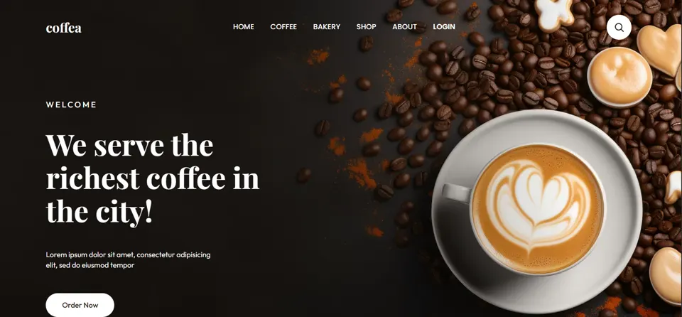
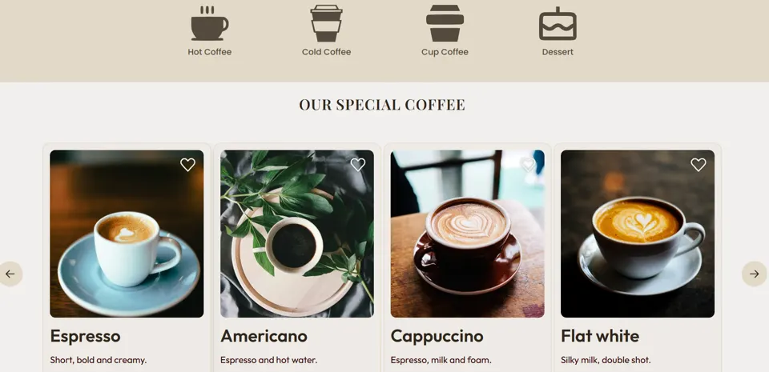
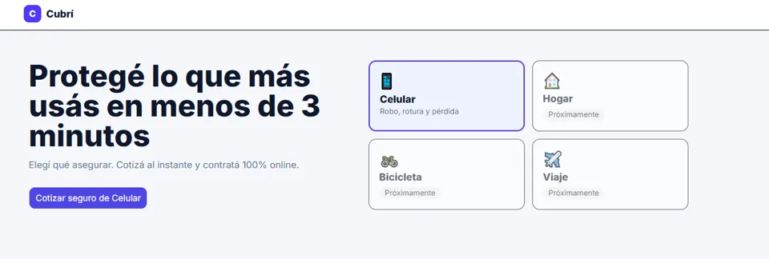
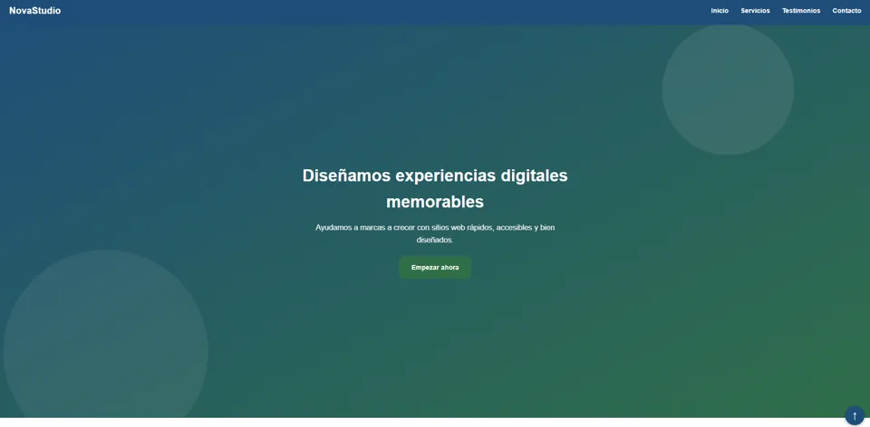

Diseño UX
Investigación básica, flujos y wireframes.
- Figma
- FigJam
- Card sorting
- Test de usabilidad
Disponible para pasantías y proyectos freelance
Estudiante de Sistemas, front-end y UX/UI. Diseño y maqueto sitios claros, accesibles y rápidos. Busco mi primera experiencia profesional.
Concepción del Uruguay, Entre Ríos (GMT-3)

Investigación básica, flujos y wireframes.
Sistemas visuales coherentes y componentes reutilizables.
Maquetación semántica, responsive y accesible.
Flujo de trabajo y publicación.

2026
Sitio donde se pueden pedir cafés, ver reseñas y encontrar los contactos de la cafetería.
Aprendizaje: mejoré mis habilidades con HTML y CSS. Incluye caso de estudio.

2026
Página para contratar seguros online. Hoy permite asegurar un celular contra robo, rotura o pérdida en 4 pasos: cotizar, elegir plan, cargar datos y pagar (pago simulado).
Aprendizaje: profundicé en HTML y CSS.

2026
Sitio de un estudio que ofrece diseño UX-UI, desarrollo web y branding, con testimonios y formulario de contacto para contratar.
Aprendizaje: fue mi primera página con todo lo aprendido y me sirvió para mejorar las otras.
2026
UADER FCyT
2025 a la actualidad
UADER FCyT, Concepción del Uruguay
2026
Práctica autodidacta
Soy Agustín, estudiante de Sistemas de Información en la UADER, en Concepción del Uruguay. Me interesa el diseño de interfaces y la maquetación web. Aprendo construyendo páginas reales y mejorándolas en cada versión.
Cada elemento tiene que ayudar a entender o a actuar.
Contraste, teclado y estructura se piensan desde el inicio.
Pruebo, mido y corrijo.
Escribime para pasantías, proyectos freelance o para charlar sobre diseño web.